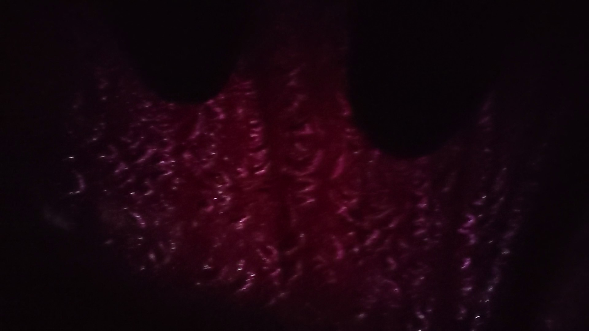

Introduction
The Oneness is an installation sound piece that speaks to the transience and change that our world is currently
experiencing. While everyone’s situation is different, the feelings produced by these transitions bind people
together
across boundaries of physical space. The experience comprises a sound composition that is experienced in a
special environment.
The sound composition is an eight minute long combination of varying layers of sine frequencies, changing in
intensity and tone
throughout the piece, with other underlying sounds to affect the mood of different times of the experience. The
composition
is intended to bring the participant to the present and make them focus on their body/physical senses; bringing
them first
more viscerally into themselves and then the surrounding world once the piece ends.
The piece itself is installed in the back of a hatchback car, using easily found household materials so that any
person can
recreate the physical experience in a vehicle of their own. The seats in the back of the car are laid flat to be
flush with
the trunk floor, creating a large flat space, which is covered with blankets. The car is blacked out using
blankets tucked
into the windows, handles, and other parts of the car. The only source of light will be coming from colored
water covering
the sunroof of the car, casting colored light through the cabin.
The sound will be played over the car speakers, so the resulting vibrations resonate through the car, shaking
the floor,
walls, and roof. The participants, lying on the floor in the car, will feel the sound all along their bodies. As
the
participant shifts their bodies, touching different parts of the car, their experience will alter as the
vibrations coming
through different structures/materials will sound and feel different. Since the roof of the car is vibrating,
the water on
the sunroof will move along with the frequencies, casting the moving light around the cabin.
The participants will be completely enveloped in the sound: feeling, hearing, and seeing the frequencies,
hopefully bringing
oneness with both themselves and our shared surroundings.
Installation

The instillation was set up in this Honda Fit. The front seats were pushed all the way up towards the front of the car with the backs lowered forward as much as possible. A blanket was held in place by both front windows and tucked into the sun visors. This blanket cut light out from the windshield and hid the dashboard, steering wheel, etc.


More blankets were held by the rear passenger windows and the trunk/hatchback door. The small blind spot side windows were covered with cardboard cut to shape and secured with tape. A blanket covered the ground for comfort with another blanket bunched up at the front as a head rest.

.JPG)
The sunroof was covered with cardboard, with a circular cutout in the middle just big enough for a purple plastic IKEA bowl. In the bowl was purple liquid, dyed with food coloring, both adding to the color concentration and letting in less light into the cabin. The liquid was retained inside the container by plastic wrap taped across the top. The bowl itself was taped inside the cardboard hole. The entire apparatus was secured to the top of the car with tape.

.jpg)

The bottom of the sunroof was then completely dark except for the purple hole. An unintended but welcome side effect was that the car was on a slant, so the water pooled more in the downhill side causing a color gradient across the bowl. This cast purple and pink light onto the blankets inside, as seen above.

When lying down, the participants put their head underneath the sunroof. When inside the vehicle, looking at the back, purple light emanates from the rear.
Testimonials
“The low frequency took me out of my thoughts and made me not think about where I was. Then the high frequencies came in and my thoughts would reset.”
“The visuals changed throughout the piece as my eyes adjusted to the surroundings, spending more time in the car made me have a deeper experience.”
“I became more and more tense as the tempo increased, then when it became constant there was a sense of relief.”
“The sounds, specifically the rumbling, made the car alive.”
“I felt completely at the mercy of the experience, completely floating along with it.”
“I went in and out of thinking about my day or whatever, but would continually be brought back into my body and the sound throughout the piece.”
“Over time my body became in sync with whatever was happening and I started to get relaxed and lulled by the sound.”
“My sense of time was altered and I got lost in the sound. When the door opened at the end I suddenly remembered where I was and was brought back to the present.”
“[This experience] really made me focus on my body a lot and then I took in the world around me much more than before after stepping out.”
“This made me go into my internal thoughts/internal self. I feel more retrospective now. It made me wonder how different or similar the experience is for other people.”
“...It seems like what a space pod would be.”
“Felt like the bottom of a boat, the motor alive with the water sounds.”
“The rapidly changing frequencies made me feel alert and focused.”
“I didn’t want to leave….wanted to stay in there at the end.”
“It was hard to think about anything but the sounds while I was in there.”
DIY
Sint ex velit cupidatat do aliqua irure culpa sunt duis aliquip do. Fugiat id non eu cillum nisi nostrud. Consequat dolore mollit laboris ex velit consequat consequat et minim. Incididunt dolor cupidatat tempor velit dolore ipsum veniam magna ea non cillum ad ea. Mollit deserunt non magna do quis ullamco nulla eiusmod ullamco.
Audio
Sint ex velit cupidatat do aliqua irure culpa sunt duis aliquip do. Fugiat id non eu cillum nisi nostrud. Consequat dolore mollit laboris ex velit consequat consequat et minim. Incididunt dolor cupidatat tempor velit dolore ipsum veniam magna ea non cillum ad ea. Mollit deserunt non magna do quis ullamco nulla eiusmod ullamco.
Inspiration
“In Harmonicity, The Tonal Walkway” by Julianne Swartz 2016
This exhibition, which is currently on display at MASS MoCA, has speakers integrated into a walking bridge. The speakers play 24 specific tones recorded by different people. These specific tones with associated vocal qualities are supposed to evoke specific emotions. So as you walk down this pathway you are exposed to the different tones and “mental effects” as you travel through. From this piece, I want to learn how to seamlessly integrate speakers and sound into a space. I also want to do research into the tonal qualities that she based her piece from and see if I can use them as inspiration for how I can manipulate sound.
“Dream House” by La Monte Young and Marian Zazeela 1993
Dream House is an entire apartment in New York City that has been transformed into an otherworldly space of sound and light. As you move through the house you experience new mediums of art as the sound and light melds together. I want to visit and experience this piece so that I can gain inspiration for how to implement art as a living thing; to completely envelop people and transport them to a new mental space.
“Perfectly Clear” by James Turrell 1991
This work is one of his “Ganzfeld” pieces that makes the viewer lose all depth perception, completely removing them from the physical space they are in. I want to learn more about James Turrell and visit more of his pieces to gain inspiration on how you can transform a space with lighting.
“Cross Cut” by James Turrell 1998
Another of Turrell’s, this piece is one of his “wedgeworks” where he lights a space to look like it has walls and barriers where there are none. What I love about his instillations are that they make you stop and think; you get completely absorbed by the work. It takes time to appreciate his pieces and you’re rewarded when you do so as you uncover more the longer you look. I’d love to have some of the same elements in my instillation.
“Candlelight” by Spencer Finch
This instillation by Finch recreates the exact light cast by a candle inside a room by color shifting the outside sunlight. I am inspired by his ability to transform the feeling of a space in such a simple way. I’d love to alter the natural light in some way in my final piece.
Updates

Sint ex velit cupidatat do aliqua irure culpa sunt duis aliquip do. Fugiat id non eu cillum nisi nostrud. Consequat dolore mollit laboris ex velit consequat consequat et minim. Incididunt dolor cupidatat tempor velit dolore ipsum veniam magna ea non cillum ad ea. Mollit deserunt non magna do quis ullamco nulla eiusmod ullamco.

Sint ex velit cupidatat do aliqua irure culpa sunt duis aliquip do. Fugiat id non eu cillum nisi nostrud. Consequat dolore mollit laboris ex velit consequat consequat et minim. Incididunt dolor cupidatat tempor velit dolore ipsum veniam magna ea non cillum ad ea. Mollit deserunt non magna do quis ullamco nulla eiusmod ullamco.
Artist
Aurora Bunten is a senior at Olin College of Engineering, graduating with a degree in Mechanical Engineering this May. The Oneness has been a huge learning experience for her; expanding her skills of not only the technical aspects of audio composition but also of engaging and grappling with the meaning and outcomes of art. She enjoyed the iterative process of slowly, continually improving the project over the semester and how small changes can have a large impact. She hopes that people at home will feel inspired to recreate the experience.